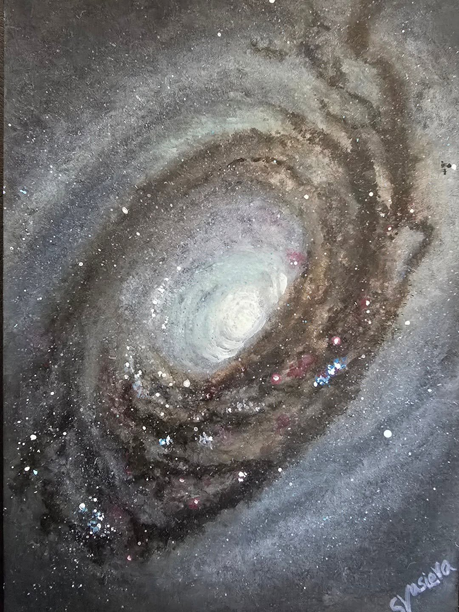

The Black Eye Galaxy (M64)
Watercolour interpretation of The Black Eye Galaxy (M64).
This spiral galaxy has a dark band of absorbing dust partially in front of its bright nucleus, which gives it its common name.

Watercolour interpretation of The Black Eye Galaxy (M64).
This spiral galaxy has a dark band of absorbing dust partially in front of its bright nucleus, which gives it its common name.